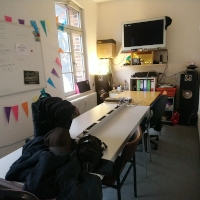
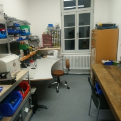
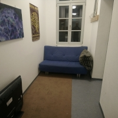
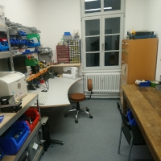
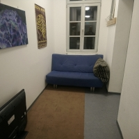

Einstieg
Aufgrund der Ausbreitung von COVID-19 bitten wir euch von physischen Treffen im Hackspace abzusehen.
Veranstaltungen und regelmäßige Treffen sind abgesagt oder werden als Videokonferenz fortgeführt. Für Aufenthalte vor Ort ist das Hygienekonzept zu beachten.
   
 
Über uns
Als Hackspace bieten wir Platz zum Spielen, Basteln, Lernen, Löten, Coden, Schnacken, Dekonstruieren, Erschaffen, Abhängen, Austauschen, Kochen etc. und möchten so einen kreativen Umgang mit Technik, Kultur, Politik und Gesellschaft fördern. Einen kleinen Einblick in das, was hier passiert, gibt dir ein Radiobeitrag bei Radio Unerhört.
Mitmachen
Du magst mal vorbei schauen und uns etwas kennenlernen?
Du findest unsere Räume im Funkhaus von Radio Unerhört Marburg, Rudolf-Bultmann-Straße 2b. Falls du uns besuchen magst, so schaue am besten auf die festen Termine weiter unten oder den Türstatus oben rechts, wann oder ob wir da sind.
Bei uns treffen viele verschiedene Menschen aufeinander, die alle sehr unterschiedliche Kenntnisse und Fähigkeiten besitzen. Auch wenn es dir schwer fallen sollte vorbei zuschauen: Lass dich bitte nicht durch (vermeintliche) Unkenntnis von einem Besuch abhalten. Auch unter den regelmäßigen Besucher*innen gibt es unterschiedlichste Leute mit manigfaltigen Kenntnissen und Fähigkeiten. Und lernen lässt sich immer noch, wenn man erst einmal da ist. Auch die erfahreneren Menschen haben irgendwann mal sehr klein angefangen.
Feste Termine
Plenum
Immer Dienstag um 21:00 Uhr, auch neue Menschen sind gerne gesehen. Bei Interesse schau einfach vorbei.
Chaostreff
Weiterhin trifft sich jeden Donnerstag ab 19:30 der Chaostreff Marburg. Dieser Termin bietet sich an, um mit Menschen in Kontakt zu treten, die dem Chaos Computer Club und seinen Themen nahestehen. Auch hier sind Interessenten jederzeit willkommen.
Wann ist sonst geöffnet?
Der Türstatus oben rechts auf dieser Webseite hilft dir. Dieser zeigt an, ob die Tür zum Raum geöffnet ist. Besetzt bedeutet dabei geöffnet, unbesetzt heißt, dass im Moment leider geschlossen ist.
Kläre am besten per Telefon (+49 6421 9689159), IRC, Mattermost oder allgemeiner Mailingliste ab, ob der Raum auch dann noch geöffnet ist, wenn Du vorbeikommen möchtest. Diese Kommunikations-Möglichkeiten kannst Du gerne auch zum Verabreden nutzen.
Hausschlüssel haben die gelisteten Personen.
Overhead
Wir haben eine Entscheidungsplattform namens Overhead, über die wir Gruppenentscheidungen beraten und planen. Das dazugehörige Plenum trifft sich und beschließt ab vier Teilnehmenden immer dienstags gegen 21:00 Uhr. Details hierzu finden sich im Artikel zu Overhead. Dort finden sich auch die Protokolle der vergangenen Plena.